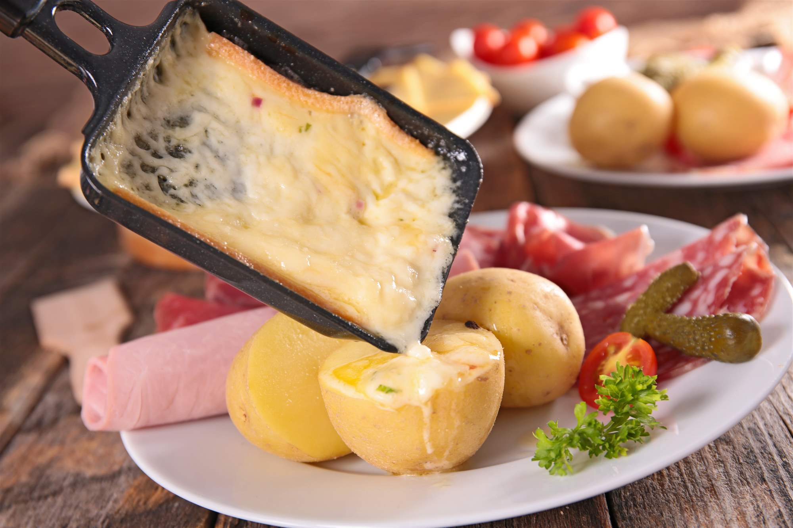

I love this recipie because it is an easy one oven pan dish, it tastes good and can be modified to personal taste. My mom usually makes it and
it has fond memories associated with it, its always a good dinner night when its made as it is hearty and filling.
| ingredient | amount |
|---|---|
| Chicken breasts | six |
| Box of stuffing | one |
| butter | 4 tbs |
| Cream of chicken soup | 2 cans |
| Milk | 1/2 cup |
| Swiss cheese | 12 slices |
| Optional spinach | enough to line the pan |
The empanadas are a famous latin dish, made in most countries of Latin America and the Caribbean. They are made of a crispy pastry filled with a variety of ingredients, such as ground beef, chicken, cheese or vegetables, and the dough is typically fried to golden perfection. They are usually served as a snack, appetizer, breakfast, or party food, offering a taste of the rich and diverse flavors of Latin America.
| Ingredients | Quantity |
|---|---|
| Grass-fed Lean Ground Beef | 2 lbs |
| Onion | 1 |
| Red Pepper | ⅓ |
| Green Pepper | ⅓ |
| Tomato Paste | 4 tbs |
| Olives | 1 tbs |
| Cilantro Chopped | 1 tbs |
| Garlic Cloves | 3 |
| Chicken Bouillon Cube | 1 tbs |
| Cumin | ¼ tsp |
| Dominican Orégano | 1 tsp |
| Sazón | ½ tbs |
| Lime | 1 |
| Empanada Dough | As needed |
| All Purpose Flour | 1 Cup |
| Oil for Frying | As needed |
Raclette is a traditional dish from Switzerland. It is highly appraciated in France since we love cheese. It is usually eaten in winter since it is a hot and cheesy dish, very comforting. It is very popular and tastes amazing. The recipe is quite simple; you just need the raclette grill to melt the cheese. You pour teh melted cheese on potatoes and eat it with different types of ham. The most important part of Raclette is the cheese. You should use Canton du Valais, which is a typical cheese from Switzerland.
| Ingredients |
|---|
| 1 kg of potatoes |
| 1 kg of cheese |
| 1 jar of pickles |
| 1 jar of onions |
| 1 jar of mushrooms |
| 1 jar of ham |